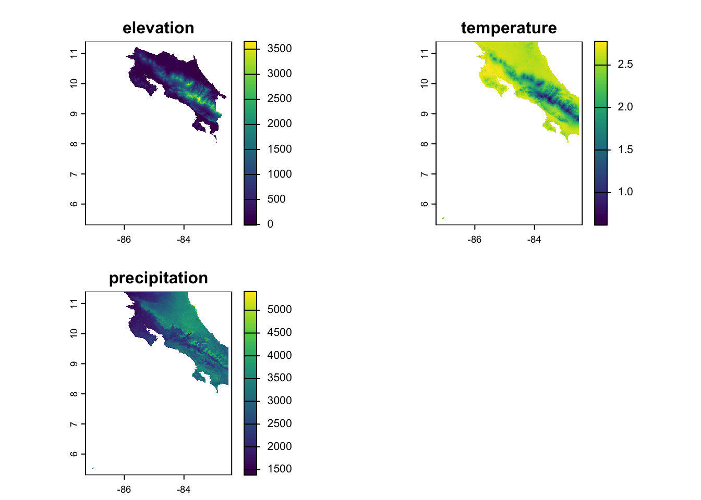

This exercise is going to rely on simulated data so you don’t need to join a repository. You’ll just need to get our credentials and login to a new RStudio session. I’m using simulation because one of the best ways to test out whether you’ve specified your model correctly is to simulate the process with known coefficients. If your statistical model returns those values, then, assuming you’ve simulated a reasonable generating process, you should be able to trust that the model you fit is actually doing what you want it to.
Code
library(tidyverse)
── Attaching core tidyverse packages ──────────────────────── tidyverse 2.0.0 ──
✔ dplyr 1.1.4 ✔ readr 2.1.5
✔ forcats 1.0.1 ✔ stringr 1.5.2
✔ ggplot2 4.0.0 ✔ tibble 3.3.0
✔ lubridate 1.9.4 ✔ tidyr 1.3.1
✔ purrr 1.1.0
── Conflicts ────────────────────────────────────────── tidyverse_conflicts() ──
✖ dplyr::filter() masks stats::filter()
✖ dplyr::lag() masks stats::lag()
ℹ Use the conflicted package (<http://conflicted.r-lib.org/>) to force all conflicts to become errors
Code
library(terra)
terra 1.8.70
Attaching package: 'terra'
The following object is masked from 'package:tidyr':
extract
Code
library(geodata)library(tidyterra)
Attaching package: 'tidyterra'
The following object is masked from 'package:stats':
filter
Simulating data
Let’s imagine we’re developing a species distribution model for a species in Costa Rica. We’ll use the elevation data and bioclim variables from the geodata package to give us some spatial predictors. To keep this tractable (for now), we’ll just use the annual mean temp and precip from bioclim. We subset them using the [[]] notation, then resample them to make sure we’ve got everything aligned (you might remember that the elevation data is higher resolution than the climate data). We also use raster math to convert the temperature to Celsius (see the geodata help for why this is). Finally, we combine the data into one stack and plot each dataset to make sure we’ve got what we expected.
Code
elevation <- geodata::elevation_30s(country ="CRI", path =tempdir())climate <- geodata::worldclim_country(country ="CRI", var ="bio", res =0.5, path =tempdir())# bio1 = Annual Mean Temperature# bio12 = Annual Precipitationtemp <- climate[[1]] # bio1precip <- climate[[12]] # bio12temp_aligned <-resample(temp, elevation)precip_aligned <-resample(precip, elevation)# Stack the predictorspredictors <-c(elevation, temp_aligned, precip_aligned)names(predictors) <-c("elevation", "temperature", "precipitation")# Scale the temperature (divide by 10 to get actual °C)predictors$temperature <- predictors$temperature /10# Visualizeplot(predictors)

Now that we’ve got our predictors, it’s time to generate some random observations!! We start by using set.seed to ensure we’re all starting from the same place. We then use spatSample create a random sample of points within our study area and extract the predictor values to our points. Finally, we set up a nice tibble each observation and the relevant predictor values and drop any NAs that may have arisen from our random sample.
Code
set.seed(123)n_points <-500# Sample random locations from the study areasample_points <-spatSample(elevation, size = n_points, method ="random", na.rm =TRUE, xy =TRUE, values =FALSE)# Extract environmental values at these pointsenv_values <- terra::extract(predictors, sample_points)species_data <-tibble(x = sample_points[,1],y = sample_points[,2],elevation = env_values$elevation,temperature = env_values$temperature,precipitation = env_values$precipitation) %>%drop_na() # Remove any NA values
Now comes the fun part - specifying the TRUE regression coefficient values. These are arbitrary and you can/should change them to explore how correlations in the values and in the data might effect your fit. We first calculate the linear predictor (the model without the link function; logit_p) by multiplying each variable by its approrpiate beta and adding them together. Then we convert this to the logit scale by using plogis to convert our linear predictor to the probability scale (remember the logit link!). Finally, we use the rbinom function to pull a random draw for each location with a probability = to our prob estimate. You can see some summary statistics of how many presences, absences, and the proportion of points that are occupied by using summarize.
Code
# DEFINE THE TRUE COEFFICIENTS (these are what you should recover!)true_beta0 <--5# intercepttrue_beta1 <-0.002# elevation effecttrue_beta2 <-0.15# temperature effect true_beta3 <-0.0005# precipitation effect# Calculate the linear predictor (log-odds) and probabilityspecies_data <- species_data %>%mutate(logit_p = true_beta0 + true_beta1 * elevation + true_beta2 * temperature + true_beta3 * precipitation,prob =plogis(logit_p),presence =rbinom(n(), size =1, prob = prob) )# Check the prevalencespecies_data %>%summarize(prevalence =mean(presence),n_present =sum(presence),n_absent =sum(presence ==0) )
We can take a look at these laid over the elevation raster to get a sense for where they are. We can also reshape the data using pivot_longer to look at the distributions of each variable within the presence and absence category.
Now that we’ve got some observations with data and presence/absence assigned according to our known betas, we can test how well our model does using a simple call to glm. The first argument specifies the model formula and can be read as “Presence is a function of elevation + temperature + precipitation”. The second argument, data is just the dataframe where all of these variables exist. The final, family argument tells R what likelihood to use to estimate the parameters (and which link function to use). Once we’ve got the model, I just make a little summary to compare the estimated values to our true specified values.
Code
model <-glm(presence ~ elevation + temperature + precipitation,data = species_data,family =binomial(link ="logit"))# Model summarysummary(model)
Call:
glm(formula = presence ~ elevation + temperature + precipitation,
family = binomial(link = "logit"), data = species_data)
Coefficients:
Estimate Std. Error z value Pr(>|z|)
(Intercept) 11.3927247 11.2600485 1.012 0.312
elevation -0.0013694 0.0022711 -0.603 0.547
temperature -5.5589898 4.0816069 -1.362 0.173
precipitation 0.0001829 0.0002774 0.659 0.510
(Dispersion parameter for binomial family taken to be 1)
Null deviance: 465.27 on 499 degrees of freedom
Residual deviance: 351.08 on 496 degrees of freedom
AIC: 359.08
Number of Fisher Scoring iterations: 5
This is (obviously) a simple example, but you can use it to explore how sample size, correlations between data, and correlations between parameters affect your ability to recover parameters. This is important info to have because it can help you gauge how realistic your expectations of your own data might be. If the model never returns the correct values unless you have 10x more observations, you’ll know something about your sampling needs. If correlated data always causes the model to fail, you’ll have to think about ways to eliminate that correlation (maybe a PCA?). Simulation is a valuable and (in my opinion) underutilized tool. Now you’ve got the template to begin doing it!!
Source Code
---title: "Statistical Modeling with Logistic Regression"---## Getting Started This exercise is going to rely on simulated data so you don't need to join a repository. You'll just need to [get our credentials](https://rstudio.aws.boisestate.edu/) and login to a [new RStudio session](https://rstudio.apps.aws.boisestate.edu/). I'm using simulation because one of the best ways to test out whether you've specified your model correctly is to simulate the process with _known coefficients_. If your statistical model returns those values, then, assuming you've simulated a reasonable generating process, you should be able to trust that the model you fit is actually doing what you want it to. ```{r}library(tidyverse)library(terra)library(geodata)library(tidyterra)```## Simulating dataLet's imagine we're developing a species distribution model for a species in Costa Rica. We'll use the elevation data and bioclim variables from the `geodata` package to give us some spatial predictors. To keep this tractable (for now), we'll just use the annual mean temp and precip from bioclim. We subset them using the `[[]]` notation, then `resample` them to make sure we've got everything aligned (you might remember that the elevation data is higher resolution than the climate data). We also use raster math to convert the temperature to Celsius (see the `geodata` help for why this is). Finally, we combine the data into one stack and plot each dataset to make sure we've got what we expected. ```{r}elevation <- geodata::elevation_30s(country ="CRI", path =tempdir())climate <- geodata::worldclim_country(country ="CRI", var ="bio", res =0.5, path =tempdir())# bio1 = Annual Mean Temperature# bio12 = Annual Precipitationtemp <- climate[[1]] # bio1precip <- climate[[12]] # bio12temp_aligned <-resample(temp, elevation)precip_aligned <-resample(precip, elevation)# Stack the predictorspredictors <-c(elevation, temp_aligned, precip_aligned)names(predictors) <-c("elevation", "temperature", "precipitation")# Scale the temperature (divide by 10 to get actual °C)predictors$temperature <- predictors$temperature /10# Visualizeplot(predictors)```Now that we've got our predictors, it's time to generate some random observations!! We start by using `set.seed` to ensure we're all starting from the same place. We then use `spatSample` create a random sample of points within our study area and `extract` the predictor values to our points. Finally, we set up a nice `tibble` each observation and the relevant predictor values and drop any NAs that may have arisen from our random sample.```{r}set.seed(123)n_points <-500# Sample random locations from the study areasample_points <-spatSample(elevation, size = n_points, method ="random", na.rm =TRUE, xy =TRUE, values =FALSE)# Extract environmental values at these pointsenv_values <- terra::extract(predictors, sample_points)species_data <-tibble(x = sample_points[,1],y = sample_points[,2],elevation = env_values$elevation,temperature = env_values$temperature,precipitation = env_values$precipitation) %>%drop_na() # Remove any NA values```Now comes the fun part - specifying the TRUE regression coefficient values. These are arbitrary and you can/should change them to explore how correlations in the values and in the data might effect your fit. We first calculate the _linear predictor_ (the model without the link function; `logit_p`) by multiplying each variable by its approrpiate beta and adding them together. Then we convert this to the logit scale by using `plogis` to convert our linear predictor to the probability scale (remember the logit link!). Finally, we use the `rbinom` function to pull a random draw for each location with a probability = to our `prob` estimate. You can see some summary statistics of how many presences, absences, and the proportion of points that are occupied by using `summarize`.```{r}# DEFINE THE TRUE COEFFICIENTS (these are what you should recover!)true_beta0 <--5# intercepttrue_beta1 <-0.002# elevation effecttrue_beta2 <-0.15# temperature effect true_beta3 <-0.0005# precipitation effect# Calculate the linear predictor (log-odds) and probabilityspecies_data <- species_data %>%mutate(logit_p = true_beta0 + true_beta1 * elevation + true_beta2 * temperature + true_beta3 * precipitation,prob =plogis(logit_p),presence =rbinom(n(), size =1, prob = prob) )# Check the prevalencespecies_data %>%summarize(prevalence =mean(presence),n_present =sum(presence),n_absent =sum(presence ==0) )```We can take a look at these laid over the elevation raster to get a sense for where they are. We can also reshape the data using `pivot_longer` to look at the distributions of each variable within the presence and absence category.```{r}ggplot() +geom_spatraster(data = elevation) +scale_fill_viridis_c(name ="Elevation (m)", alpha =0.7) +geom_point(data = species_data, aes(x = x, y = y, color =factor(presence)),size =1, alpha =0.6) +scale_color_manual(values =c("0"="blue", "1"="red"),labels =c("Absent", "Present"),name ="Species") +labs(title ="Species Distribution") +theme_minimal() +theme(legend.position ="right")# Compare environmental values between presence and absence# Reshape data for easier plottingplot_data <- species_data %>%select(presence, elevation, temperature, precipitation) %>%pivot_longer(cols =c(elevation, temperature, precipitation),names_to ="variable",values_to ="value") %>%mutate(presence =factor(presence, labels =c("Absent", "Present")),variable =factor(variable, levels =c("elevation", "temperature", "precipitation"),labels =c("Elevation (m)", "Temperature (°C)", "Precipitation (mm)")) )ggplot(plot_data, aes(x = presence, y = value, fill = presence)) +geom_boxplot(alpha =0.7) +facet_wrap(~variable, scales ="free_y", ncol =3) +scale_fill_manual(values =c("Absent"="blue", "Present"="red")) +labs(title ="Environmental Conditions by Presence/Absence",x ="Species Presence",y ="Value") +theme_minimal() +theme(legend.position ="none")```## Fit the ModelNow that we've got some observations with data and presence/absence assigned according to our known betas, we can test how well our model does using a simple call to `glm`. The first argument specifies the model formula and can be read as "Presence is a function of elevation + temperature + precipitation". The second argument, `data` is just the dataframe where all of these variables exist. The final, `family` argument tells `R` what likelihood to use to estimate the parameters (and which link function to use). Once we've got the model, I just make a little summary to compare the estimated values to our true specified values.```{r}model <-glm(presence ~ elevation + temperature + precipitation,data = species_data,family =binomial(link ="logit"))# Model summarysummary(model)# Compare estimated coefficients to true valuestibble(Parameter =c("Intercept", "Elevation", "Temperature", "Precipitation"),True_Value =c(true_beta0, true_beta1, true_beta2, true_beta3),Estimated =coef(model),Difference = Estimated - True_Value,Pct_Error = (Difference / True_Value) *100)```## Parting ThoughtsThis is (obviously) a simple example, but you can use it to explore how sample size, correlations between data, and correlations between parameters affect your ability to recover parameters. This is important info to have because it can help you gauge how realistic your expectations of your own data might be. If the model never returns the correct values unless you have 10x more observations, you'll know something about your sampling needs. If correlated data always causes the model to fail, you'll have to think about ways to eliminate that correlation (maybe a PCA?). Simulation is a valuable and (in my opinion) underutilized tool. Now you've got the template to begin doing it!!